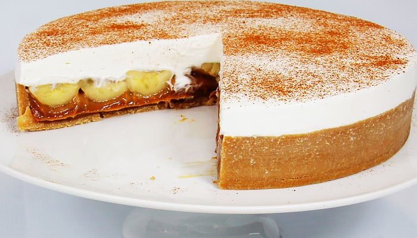

INGREDIENTES
- 200 g de bolacha maisena
- 4 bananas caturras maduras
- 1 pote de nata
- canela em pó a gosto
- 100 g de manteiga amolecida
- 2 latas de leite condensado
- 4 colheres (sopa) rasas de açúcar
- achocolatado em pó a gosto
MODO DE PREPARO
- Faça uma farofa com a bolacha de maisena e manteiga.
- Espalhe somente no fundo de um refratário.
- Coloque para assar em forno preaquecido a 200º C por 7 minutos.
- Fatie as bananas caturras no sentido comprido.
- Coloque os leites condensados em uma panela de pressão por 35 minutos. Deixar esfriar.
- Bata a nata e o açúcar na batedeira até virar um creme.
MONTAGEM
- Depois de frio, espalhe o leite condensado sobre a massa na forma.
- Cubra o leite condensado com a banana fatiada.
- Sobre a banana, espalhe o creme da nata
- Alise bem e com uma peneira fina, polvilhe com chocolate em pó e um pouco de canela.
- Leve à geladeira por 3 horas.
|

|